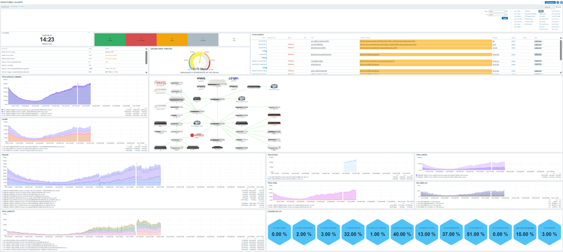
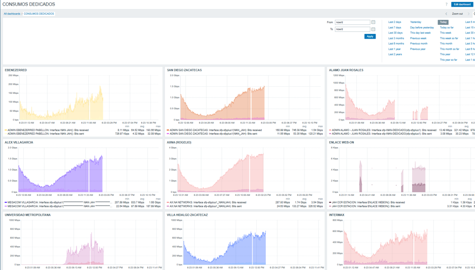
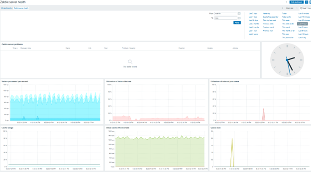

La integración de JAH Nexus con Zabbix te entrega un motor de telemetría de clase enterprise completamente configurado para infraestructura ISP: OLTs, radios, MikroTik y todo tu backbone, bajo un mismo techo de visibilidad.
Zabbix integrado en JAH Nexus no es solo monitorización. Es el sistema nervioso de tu red, alineado con los flujos de trabajo de tu equipo NOC y los modelos de IA de Sentinel.

Templates preconfigurados para los equipos más utilizados en redes ISP de América Latina: OLTs Huawei MA5800/5600, radios Ubiquiti y Cambium, routers MikroTik CCR/RB series, switches Cisco/Juniper y concentradores PPPoE. El despliegue se realiza con auto-discovery de red, sin configuración manual host por host.
Gráficas de tráfico de entrada/salida por interfaz, nodo y enlace WAN. Identifica cuándo y dónde tu red se satura para planificar expansiones.

Alertas por umbrales dinámicos: uso de CPU superior al 80%, latencia mayor a 20ms o pérdida de señal óptica. Notificaciones centralizadas.

Monitorización continua de latencia y jitter por nodo con ICMP y TCP. Detección temprana de degradación de enlaces antes de que impacte al cliente. Mapas de calor de latencia por zona geográfica.
Calidad de EnlaceSeguimiento histórico de la utilización de recursos de procesamiento en cada equipo crítico. Detecta cuellos de botella preventivamente.
Los datos de Zabbix se envían en tiempo real al motor de IA de Sentinel como fuente de verdad primaria. Cuando Sentinel detecta una anomalía predictiva, puede consultar el historial de Zabbix para enriquecer el diagnóstico. Un ecosistema que se retroalimenta.
AIOps FeedNuestro equipo despliega y configura la integración Zabbix-JAH Nexus con un proceso probado que minimiza el tiempo de puesta en marcha.
Levantamos el inventario de equipos a monitorizar and definimos la arquitectura de Zabbix Proxies para cubrir toda la topología de red sin puntos ciegos.
Aplicamos los templates preconstruidos por tipo de equipo y activamos el auto-discovery de red para que Zabbix encuentre y agregue nodos automáticamente conforme crece tu infraestructura.
Ajustamos los umbrales de alerta a las condiciones reales de tu red. No alertas genéricas: umbrales calibrados para evitar fatiga de alarmas en tu equipo NOC.
Conectamos el stream de telemetría de Zabbix con el motor de Sentinel. A partir de este momento, cada métrica recolectada alimenta los modelos predictivos de IA.
Solicita nuestra evaluación de cobertura de monitorización gratuita. En 30 minutos te decimos cuántos puntos ciegos tiene tu red actualmente.